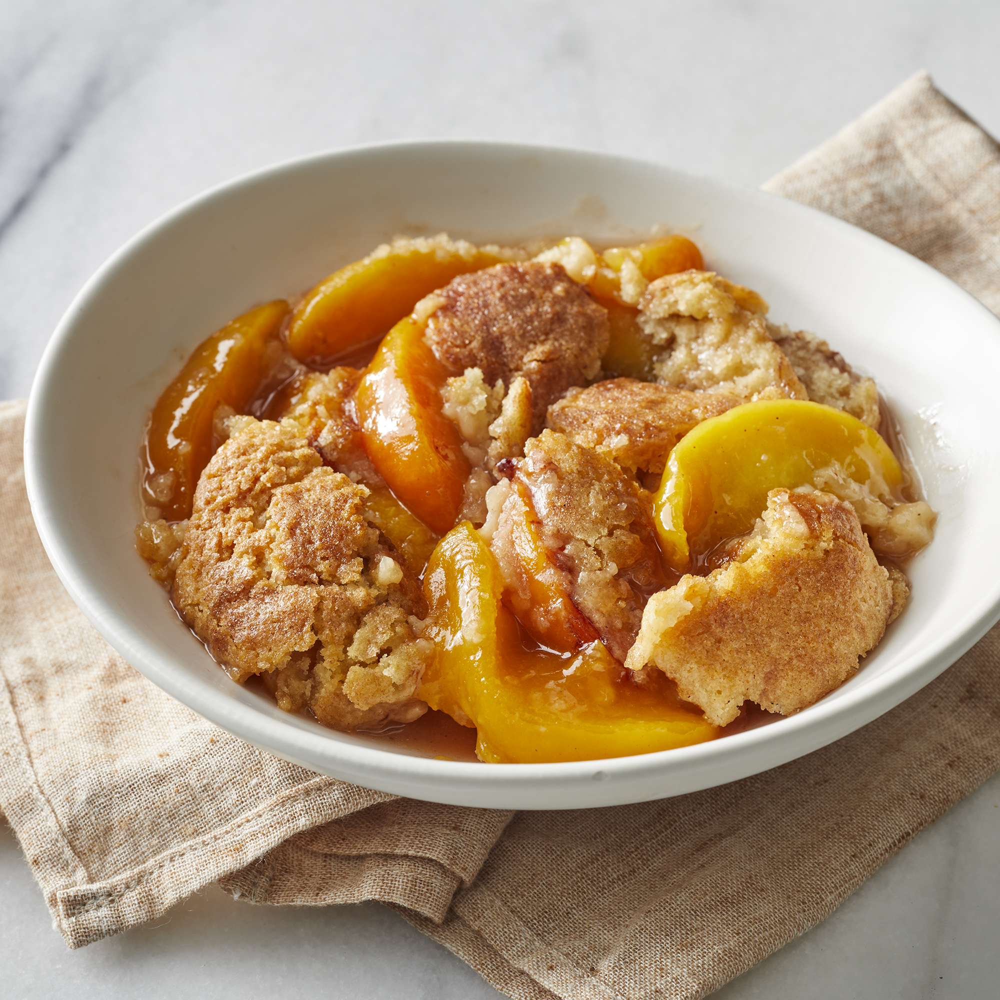

Peach Cobbler

Peach Cobbler
A classic peach cobbler made with fresh peaches.
Ingredients
- 3 tablespoons white sugar
- 1 teaspoon ground cinnamon
- 8 fresh peaches- peeled, pitted and sliced into thin wedges
- .25 cup white sugar
- .25 cup brown sugar
- .25 teaspoon ground cinnamon
- .125 teaspoon ground nutmeg
- 1 teaspoon fresh lemon juice
- 2 teaspoons cornstarch
- 1 cup all purpose flour
- .25 cup white sugar
- .25 cup brown sugar
- 1 teaspoon baking powder
- .5 teaspoon salt
- 6 tablespoons unsalted butter, chilled and cut into small pieces
- .25 cup boiling water
Steps
- Mix together sugar and cinnamon.
- Preheat oven to 425 degrees F (220 degrees C)
- In a large bowl, combine peaches, .25 cup white sugar, .25 cup
brown sugar, .25 teaspoon cinnamon, nutmeg, lemon juice and cornstarch.
- Toss to coat evenly, and pour into 2 quart baking dish.
- Bake in preheated oven for 10 minutes.
- Meanwhile, in a large bowl, combine flour, .25 cup white sugar, .25 cup brown sugar,
baking powder and salt.
- Blend in butter with your fingertips, or a pastry blender, until mixture
resembles coarse meal.
- Stir in water until just combined.
- Remove peaches from oven, and drop spoonfuls of topping over them.
- Sprinkle entire cobbler with cinnamon and sugar mixture.
- Bake until topping is golden, about 30 minutes.